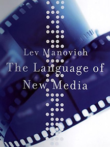
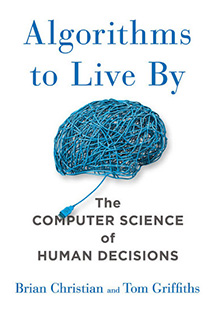
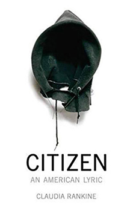

January Book List
As a Master's student in Information, I'm always reading. Not that there's anything new, there - I've always been a bookworm. The more books the merrier! Here's what I'm reading for January:
Lev Manovich starts off his analysis by an experiential snapshot of the 1929 film Man with a Movie Camera. But don't be fooled: this book offers a portrait of media as it is today. Equal turns literary theory and cultural anthropology, Manovich has produced a truly immersive work.
Reminiscent of the Nobel Prize-Winning author David Kahneman, Christian and Griffiths have written a readable account of Bayesian inferences and it doesn't stop there! This book is for everyone who has wondered exactly how many online dates is too many, for everyone who wonders how telephone companies work, for everyone who is ready to fall in love with algorithms.
I've always had a soft spot for poetry. Rankine is a fierce reminder of the times we live in. She grabs the reader and shows a deeply divided nation, one that has anger and negation and racism woven into its very roots. Her startling command of language pulls and pulls at the reader from the very opening lines:
"When you are alone and too tired to even turn on any of your devices, you let yourself linger in a past stacked among your pillows"